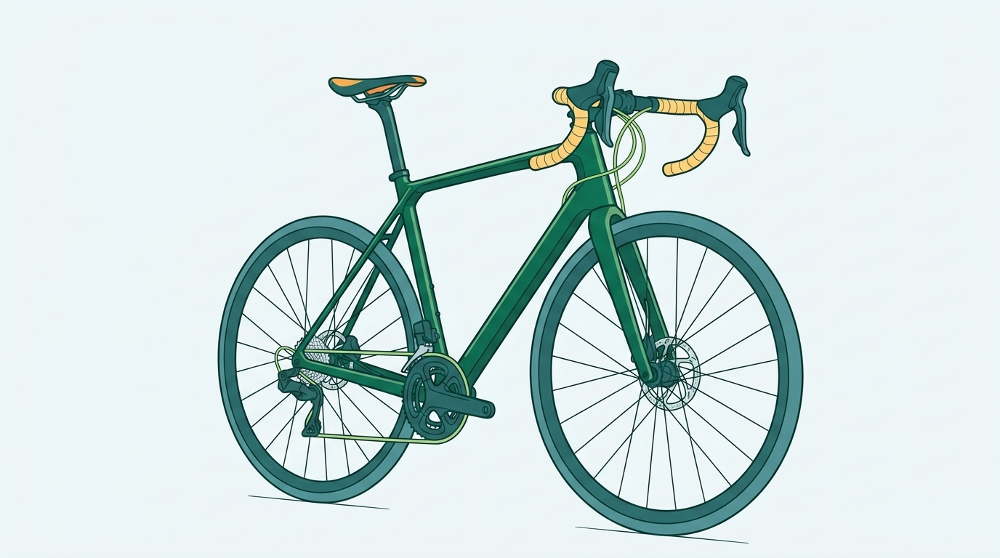
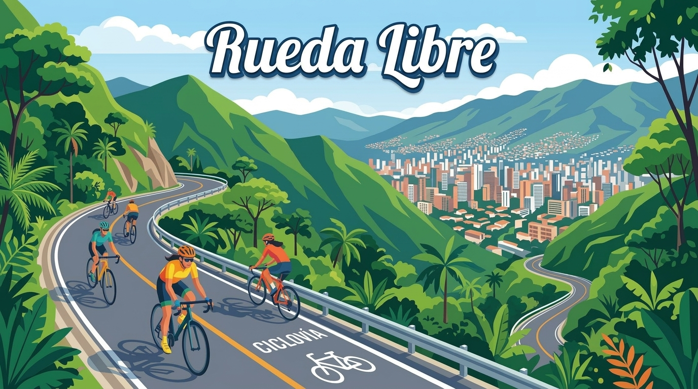
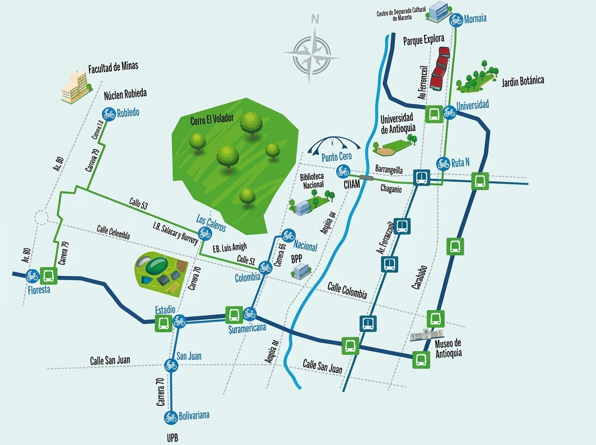

Alquiler de bicicletas
Alquilamos bicicletas para recorrer Medellín y sus alrededores. El servicio incluye casco y candado para tu recorrido. Disfruta la ciudad a tu propio ritmo.

Rueda Libre
Somos un negocio de Medellín dedicado al alquiler de bicicletas para que disfrutes la ciudad y sus paisajes. Visítanos y encuentra nuestra ubicación para comenzar tu aventura sobre dos ruedas.

Alquilamos bicicletas para recorrer Medellín y sus alrededores. El servicio incluye casco y candado para tu recorrido. Disfruta la ciudad a tu propio ritmo.

Organizamos recorridos en bicicleta por lugares interesantes de Medellín, acompañados por guías. Descubre nuevos lugares mientras disfrutas del paisaje.
Consultar precios de los recorridos guiados

Ofrecemos revisiones y ajustes básicos para ayudarte a mantener tu bicicleta en buenas condiciones antes de salir a rodar. Consulta la disponibilidad del servicio.
Estamos en Medellín. Consulta nuestra ubicación en el mapa o escríbenos para obtener más información.